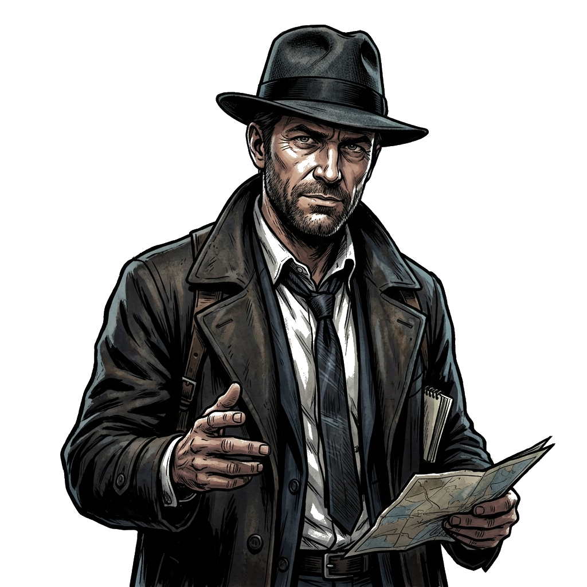

VAKA DOSYASI #104
|
Soruşturma yürütmek istediğiniz kasabayı seçin


"Soruşturmada Size Yardımcı Olmak İçin Buradayım Amirims!"
Amirims, kasabadaki 5 binanın tamamını incelemeli, delilleri toplamalı ve şüphelileri sorgulamalısınız. Adli Tıp otopsi raporu hazır olduğunda harita ekranından hemen inceleyin!

Nesne açıklaması...
Dosyayı kapatma vakti geldi. Hangi fotoğrafa çarpı atalım?
Bu binaya tekrar giremezsiniz! Tüm ipuçlarını topladığınızdan ve NPC ile konuştuğunuzdan emin olun.
Adli Tıp Merkezi'nden Otopsi Raporu geldi! Harita ekranındaki rapora tıklayarak inceleyebilirsiniz.
Bu kasabadaki soruşturma henüz kilitli. Önce Gizemli Kasaba cinayet vakasını çözmelisiniz!
İçeri girmek için kapıyı tıklayın